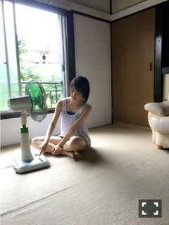

2016/0731Sunうすしお顔
8月！蝉がみんみん〜

ヤンガンのオフショット
私はエアコンより扇風機派です✨
みんな平等に涼しくなるように
堀家は首が回る設定にしていて
自分の所にくるのをじーっと
今か今かと待っています笑
バスタオルにくるまれる
今発売中のBUBKAさんでは
私、松村さん、いくちゃんで
対談しています！
"天才" "宇宙人" "変人"
と見出しに書いてありました(・ω・)笑
是非みてください♪
告知
発売⇩
○「BOMB」堀飛鳥生田 表紙&巻頭
○「ヤングガンガン」表紙＆巻頭
○「読売中高生新聞」
○「non-no」
○「B.L.T.」
○「BUBKA」
○8/10発売「blt graph. vol.10」
TV、ラジオ
○毎週日曜日 18:00〜
乃木坂の「の」
○毎週日曜日 24:00〜
乃木坂工事中
写真を撮っていたらひょっこり入ってきた
かずみさん可愛い〜〜♡
Mステでは髪を巻き巻きしました！
階段登場シーンはたこ焼きポーズ(0･ω･0)
ほっぺたが柔らかくてぷにぷに
なのでよくたこ焼きたこ焼き〜って
小さい頃からしていたの！
握手会とかでもリクエストしてくださったら
全力のたこ焼き(0･ω･0)しますよ〜♪
発売中のnon-no
私はみなみあすかと出させて
いただいています！
真っ黒の洋服に髪もウェット感のある
感じで大人っぽく撮っていただきました。
七瀬さんの表紙、可愛い(,,•﹏•,,)
そして
10月に行われるGirlsAwardで
ランウェイを歩かせていただきます✨
今から食生活の改善に運動、姿勢など
できる事から始めていきます。
緊張8楽しみ2！頑張る。
ではでは
今日も1日楽しみおな♪
2016/07/31 13:30


コメント(439)
こんにちは。 ３キロも痩せましたか。 すごい努力の成果です
ね。 ただ、急激に、ジョギングなどの、運動を、すると、
ガクッと体調を崩したりするので、徐々に、がいいと思います。
夏場に、体重を、下げるのも、本来危険なはずなので、気を付けて
ください。
途中セミが地面にいたんだね…
セミはよく地面や階段や壁とかにいるけど、近づいたら、いきなり飛んでいくからびっくりする！(゜д゜)逆に地面にいたら歩いてる最中だったりしたら、びっくりしちゃうね！
続いて。 写真集見ました！
未央奈さん、単独の物でもないので、そんなに、期待して無かった
のですが、しばらくページめくって行くと。
おお！！ 初めて見ました！！ 未央奈さんの、水着姿！！
超貴重！！ なんと白くて、腰周りの特に、痩せている事か！！
確か、乃木中の、グアムロケと、同じスケジュールで、撮影してい
るので、紫外線にやられて、メロメロだったはずです。
なのに、このビューティーさは、
一体なんなのでしょう
本当に、買って良かったです。 将来、ソロの写真集が、出る
のが、今から待ち遠しくなって来ました。
未央奈さん、グッジョブ
セミがいるとびっくりしちゃうね！
堀ちゃんの笑顔大好き
モバメお返事タイム！
撮影お疲れ様ー( ´ ▽ ` )ﾉ
セミって地面にひっくり返ってる姿をよく見る
あれ、突っついてあげると凄い勢いで飛んでいかない？笑
かまどごはん、美味しかった？
かずみんさんとの撮影
お疲れ様です。
とても楽しかったみたいで何よりです。
755見たんだけど、少し痩せたんだね。
ムリし過ぎないようにね。
夏バテじゃないよね？
少し心配です。
それではまた、
未央奈さんの幸せを願って、
折りたたみ傘地蔵
半年で3kgも体重減ってたなんて、凄い！そうだね、この調子で、油断せずに、頑張って！秋にはガールズアワードあるしね！
かずみんとの撮影、お疲れ様！いっぱい笑ったんだね！笑ってる未央奈ちゃん、可愛いから、見るの楽しみ！
地面にセミがいたなんて、未央奈ちゃん、結局驚いたんじゃない？何か、その画が想像できる！笑
未央奈ちゃんがゴチに出たら、ほぼ的確か、めっちゃ外すかのどっちかな気がするー！
明日は写真集の発売やー！楽しみ！お渡し会、行きたかったぁ！楽しんでね！
今日は、ずーっと眠たかった！何故だ！
明日も楽しみおな♪
では、おやすみおな(^∧^)
こんばんはー(^o^)/
本日の出勤時の車の中の
セットリストは、
裸足でSummer
無表情
僕だけの光
シャキイズム
ハルジオンが咲く頃
今、話したい誰かがいる
オフショアガール
ユウTAM(タム)です（´-`）
かずみんと撮影だったんだね＊
何の撮影かなぁ
楽しみにしてるね(^-^)
ボクもさっき仕事の眠気覚ましに
散歩してたら、
足元に黒い物体が……。
よく見たらセミだった(-｡-;
夜だったから余計に分かりづらかった。。
それでは歌って頂きましょう。
乃木坂46で"蝉"
………（笑）
ではでは、
ゆっくり休んでねzzz
ボクはまだまだ仕事頑張ります！
未央ちゃんが活躍する場がどんどん広がってるから、応援している方は嬉しい限りです。
太ってる人が3キロ痩せるのとは異なると思うから、無理なくね。まあ、Cuteで smartな未央ちゃんなら大丈夫だよね？
写真集のお渡し会に行きたかったなぁ。
未央ちゃんを応援しています。
余談ですが今日暑くて目が覚めました。(இ_இ*)ｱﾂｲﾉﾆｶﾞﾃ
これから２週間は暑い日が続くみたいです。熱中症とか気おつけてくださいね。お節介ながら塩ライチなんか美味しくてお勧めです。
さんま御殿出演おめでとう。ガルアワといいメジャーなものの出演が続いてファンとしても嬉しいですね。(「^^「ｳﾋｮｲ ただこれだけメジャーだと見ていて自分もちょっと緊張するかな～～(^^Ａ;)ﾊﾊ
７５５凄い勢いでフォロワーが増えていますね。あっという間に２千人増えています。そうそう画像変えましたね。(*^0^*)
簡単ですがこの辺で。又コメントします。
では今日も一日いい日であります様に。人
お仕事頑張って〜
見てて凄く癒されました！年下の僕がなんか変ですねw これからも応援してますm(。_。)m
一番に報告したかったのでこのブログにかかせてもらいましたw
最近、暑いから汗だく状態！(＞＜)水分補給しなきゃo(｀ω´)o
すーーーーーーーーーーーーーっごく行きたかった。
裸足でsummerの初回限定盤を買ったから、
握手会にはいきますよ
最近、けっこう暑いから汗だく状態！(＞＜)水分補給しなきゃo(｀ω´)o
最近、暑いから汗だく状態！(＞＜)水分補給しなきゃo(｀ω´)o写真見たよ！可愛かったよ！
ちょうど今、『1時間遅れのI love you.』のお渡し会の真っ最中ですよね？
グアムでの撮影時の思い出やオフショットなどまだありましたら、是非ブログに載せてください☆
今日のバズリズム楽しみです♪
では明日からの名古屋公演頑張ってください！
いつも更新ありがとうございます(*^^*)
実はモバメもブログも読ませて頂いていて、堀さんらしさがとても心地良くて楽しませて頂いています♫
福屋書店のお渡し会、応募したらまさか当選して参加させて頂きました☺︎
流れが早過ぎて段取りを飲み込む内に終わってしまいましたが、お会い出来て嬉しかったです！
堀さんも西野さんも、ちっちゃくて良い意味でリアリティがなくて不思議な感じ、可愛かったです☆
暑いので体調には気を付けて！
素敵な１日を〜！
すごい小声でありがとう言われたもんでこっちも負けじと小声でありがとう返事しちゃった。
それで思ったことがあるの。。。
握手会行こう！って
緊張しぃだから、こわくて。だって、芸能人が目の前にいて握手してお喋りしてくれるんだよ！
だから避けてた。でも、でもね、応援してること、パワーをもらってることを直接伝えたいなって思った。
短い時間でもいいから会いに行きます！
オレンジ眼鏡をひっさげて会いに行きます！
今日は、ありがとうございました！
今日も暑い！(＞＜)最近、かなり暑いから汗だく状態…(＞＜)写真見たよ！めっちゃ可愛かったよ！o(^▽^)o
モバメ読んだよ！
1人で収録とか凄いね！！
外仕事もめっちゃ増えてて、いろんな媒体で見ることが出来てる今が幸せだよ^_^
昨日のみさ先輩と一緒に出たラジオも楽しかったなぁ！
無茶振りにもしっかり応えてて、上からかもしれないけど、成長してると思うよ^ ^
2016年は乃木坂の夏にしようね！！
じまさんより^_^
みおなの写真１枚で、この写真集を買った価値があったよ。
暑いから体調気をつけてね。ダイエットとか考えないでエネルギー飲料たくさん飲んでね。みおなの乃木のの毎週楽しみに聴いてます。みおなの声も口調も好き。
頑張ってね、応援してます。
明日のガイシ行きます
暑いけど頑張ってな！
楽しみにしてます
まいまい！やろ
自分はまいまいのファンなので
たぶんあってるはず
では
こんばんはー(^o^)/
この夏、早くもベルトの穴2つ分
痩せました！
ユウTAM(タム)です（´-`）
朝に歩いたのは、
あえて歩いて行ったのかな？
朝はまだ陽射しも日中ほど強くないから
いいよね(^-^)
でもあんまり頑張り過ぎて
ダウンしないようにね(´･_･`)
ボクは深夜の仕事中に
眠気覚ましも兼ねて歩いてるよ！
深夜は涼しくて歩きやすい♪
でも未央奈は深夜に歩くとか
危険だからダメだよ(´･_･`)
----------------キリトリ----------------
2年前でこの髪型で
この輪郭の感じは……
まいまいかな＊
ではでは、
"もののけ姫" 楽しんでね〜♪
お渡し会もお疲れ様ーーo(^▽^)o
お渡し会お疲れ様!
写真集見たよ！
水着になってたね！
プール？でぶくぶくしてるやつ好き(o^－^o)
明日と明後日のライブがんばって‼
明日は名古屋ライブですね。
応援に行くよー。
未央奈さん、ガンバ、ファイトオー☆○(゜ο゜)o
ウキウキ
折りたたみ傘地蔵
未央奈さんは、扇風機派ですか。
僕と一緒ですね(#^.^#)
やっと暑くなってきて、出番が来ましたね。
モバメお返事タイム！
もう、ちょっと歩いただけでも汗かいちゃうよね
汗っかきだから困るわ(x_x；)
写真集のお渡し会、未央奈の部申し込んだけどハズレてしまった＿|￣|○
えー誰だろう？
尊敬する人…松井玲奈ちゃんとか？違うか(;一_一)笑
最近ブログ見てなくて今1ヶ月分ぐらいのブログ読んでるよーw
みおなのかわいさがますます増してきてヤバイw
裸足でsummerも買ったよ！
最高だわーーーーーーーー
サンダル脱ぎ捨てた
このフレーズねw
俺得すぎるーーーーーーーーー
早く神宮こないかな
それでは今日はこの辺で
おやすみおな（＾ω＾）
コメントする